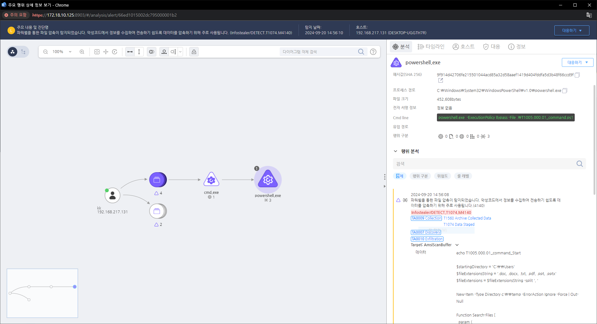

MITRE ATT&CK 액션을 기준으로 대응 방안을 작성
Action = "AMSISCAN" AND AMSISCAN_DATA = "Compress-Archive"

의심스러운 파일 접근 및 데이터 수집 행위를 실시간으로 모니터링하고 분석하여 공격을 즉시 차단합니다.
데이터 접근 제어 강화 (Access Control): 민감한 파일이나 데이터에 접근할 수 있는 사용자 계정을 제한하고, 최소 권한 원칙(Principle of Least Privilege)을 적용하여 불필요한 데이터 접근을 차단합니다.
데이터 암호화 (Encryption): 중요한 데이터나 파일을 암호화하여, 공격자가 데이터를 탈취하더라도 이를 쉽게 사용할 수 없도록 합니다.
모니터링 및 감사 (Monitoring and Auditing): 로컬 시스템에서 데이터에 접근하는 활동을 실시간으로 모니터링하고, 비정상적인 접근 시도를 탐지하는 시스템 로그를 분석합니다.
파일 무결성 확인 (File Integrity Monitoring): 중요한 파일 및 데이터의 무결성을 모니터링하여, 변조나 탈취가 발생할 경우 이를 즉시 탐지할 수 있도록 합니다.
Action 실행시 함께 영향을 받는 다른 Techniqes
| ATT&CK |
|---|
| T1005.000 |
| T1074.001 |
| T1560.000 |
| T1119.000 |
| T1083.000 |
| T1059.001 |
| D3FEND |
|---|
| D3-FIM File Integrity Monitoring |
| D3-NTF Network Traffic Filtering |
| D3-NTA Network Traffic Analysis |